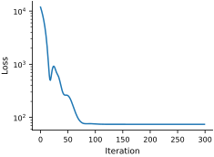
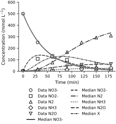
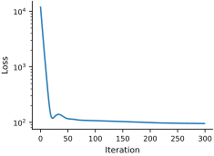
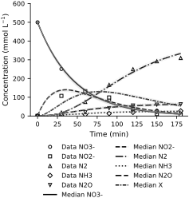

Example: The Catalysis Problem Using the Laplace Approximation#
We return to the catalysis problem solved with the classical approach, using the data reported by Tsilifis et al. (2016). That treatment left several concerns.
The solution may not exist. (In the catalysis example, try calibrating a model that does not include the intermediate element \(X\). Check whether the reduced reaction network can reproduce the observed concentration histories.)
Multiple solutions may exist. (In the catalysis example, try adding one more fictitious reaction product. You will probably fit the data very well. But which model is the right one?)
No estimate of uncertainty.
A Bayesian treatment lets us combine prior information with the likelihood and quantify parameter uncertainty. We begin with a Laplace approximation for the catalysis problem.
Let’s start by assuming that \(\sigma = 5\). We use the prior scale \(\gamma=10\) in both calculations below, with
The prior contributes the following curvature to the log posterior: $\( \nabla^2 \log p(x) = -\gamma^{-2}I. \)$
data_path = Path('../../data/catalysis.csv')
if not data_path.exists():
url = 'https://raw.githubusercontent.com/PredictiveScienceLab/advanced-scientific-machine-learning/refs/heads/main/book/data/catalysis.csv'
download(url)
data_path = Path('catalysis.csv')
catalysis_data = pd.read_csv(data_path)
t_exp = jnp.array(catalysis_data.loc[catalysis_data['Time'] > 0, 'Time'].values)
t0 = 0.0
t1 = t_exp[-1]
We use the same rate matrix and initial condition as the classical example. Since the system is linear, \(z(t)=\exp(tA(x))z(0)\) gives its solution. Evaluating this matrix exponential also lets us check second derivatives by automatic differentiation.
# Define the linear system
def A(x):
"""
Return the matrix of the dynamical system.
"""
k = jnp.exp(x) / 180.0
res = jnp.zeros((6, 6))
res = res.at[0, 0].set(-k[0])
res = res.at[1, 0].set(k[0])
res = res.at[1, 1].set(-(k[1] + k[3] + k[4]))
res = res.at[2, 1].set(k[1])
res = res.at[2, 2].set(-k[2])
res = res.at[3, 2].set(k[2])
res = res.at[4, 1].set(k[3])
res = res.at[5, 1].set(k[4])
return res
@jit
def solve_catalysis(t, x, z0):
"""Evaluate the same linear model using its matrix exponential."""
matrix = A(x)
return vmap(lambda ti: expm(ti * matrix, max_squarings=32) @ z0)(t)
But this time instead of just minimizing the sum of squared errors, we will minimize the negative log posterior.
# Negative log posterior and its gradient
def minus_log_post(x, z, y, t, sigma, gamma):
res = solve_catalysis(t, x, z)
flat_res = jnp.hstack([res[:, :2], res[:, 3:]]).flatten()
# Negative log-likelihood
tmp = (flat_res - y)
likelihood = 0.5 * jnp.sum(tmp**2) / sigma** 2
# Negative log-prior
prior = 0.5 * jnp.sum(x**2) / gamma**2
# Total negative log posterior
posterior = likelihood + prior
return posterior
# Initial guess for x
key = jr.PRNGKey(0)
x0 = jr.normal(key, shape=(5,))
# Initial conditions
z0 = jnp.array([500., 0., 0., 0., 0., 0.0])
# Extract the experimental data
Y = catalysis_data.loc[catalysis_data['Time'] > 0, ['NO3', 'NO2', 'N2', 'NH3', 'N2O']].values
y = Y.flatten()
# Set up the optimizer
optimizer = optax.adam(learning_rate=1e-1)
opt_state = optimizer.init(x0)
x = x0 # Initialize x
sigma = 5.0
gamma = 10.0
# Use as many iterations as needed
num_iterations = 300
loss_evol = []
objective_and_gradient = jit(value_and_grad(minus_log_post))
for i in range(num_iterations):
value, grads = objective_and_gradient(x, z0, y, t_exp, sigma, gamma)
updates, opt_state = optimizer.update(grads, opt_state)
x = optax.apply_updates(x, updates)
loss_evol.append(value)
# Print the loss every 100 iterations
if i % 50 == 0:
print(f"Iteration {i}, loss: {value}")
# Refine the optimizer endpoint before evaluating its local curvature.
fit = minimize(lambda p: objective_and_gradient(p, z0, y, t_exp, sigma, gamma), np.asarray(x), jac=True,
method='BFGS', options={'gtol': 1e-7, 'maxiter': 1000})
x = jnp.asarray(fit.x)
gradient_norm = float(jnp.linalg.norm(objective_and_gradient(x, z0, y, t_exp, sigma, gamma)[1], ord=jnp.inf))
assert gradient_norm < 1e-5, gradient_norm
print('Final maximum absolute gradient:', gradient_norm)
print(f'The value of x is {x}')
Iteration 0, loss: 11849.38366357738
Iteration 50, loss: 256.91680399036767
Iteration 100, loss: 75.37249010327423
Iteration 150, loss: 74.17829683660295
Iteration 200, loss: 74.17546770609167
Iteration 250, loss: 74.1754368949555
Final maximum absolute gradient: 1.398124998430451e-10
The value of x is [ 1.35942816 1.65879955 1.34579466 -1.0485962 -0.16052466]
# Plot the loss evolution
fig, ax = plt.subplots(figsize=FIGURE_SIZES["half_standard"])
ax.plot(loss_evol, color=colors[0])
ax.set_xlabel("Iteration")
ax.set_ylabel("Loss")
ax.set_yscale('log')
finalize_axes(keep_box=False)
plt.show()

The small gradient confirms a stationary point of the negative log posterior. We approximate its Hessian with centered finite differences, filling both entries of every mixed partial derivative. We check the result against automatic differentiation and require positive curvature before inverting it to obtain the Laplace covariance.
def compute_post_cov(mu, y, sigma, gamma, z0, t, epsilon=1e-3):
"""Compute the posterior covariance matrix using the Hessian of the log-posterior."""
n = mu.size
# Define the function f(mu) that computes the model outputs
def f(x):
sol = solve_catalysis(t, x, z0)
f_mu = jnp.hstack([sol[:, :2], sol[:, 3:]]).flatten()
return f_mu
# Compute f(mu) at the given mu
f_mu = f(mu)
m = f_mu.size
# Initialize gradient dfdx (Jacobian matrix)
dfdx = jnp.zeros((m, n))
# Compute gradient of our solver numerically using finite differences
for i in range(n):
e_i = jnp.zeros(n)
e_i = e_i.at[i].set(epsilon)
f_plus = f(mu + e_i)
f_minus = f(mu - e_i)
f_prime = (f_plus - f_minus) / (2 * epsilon)
dfdx = dfdx.at[:, i].set(f_prime)
# Initialize Hessian d2fdx2
d2fdx2 = jnp.zeros((m, n, n))
# Compute Hessian of our solver numerically using finite differences
for i in range(n):
for j in range(i, n):
e_i = jnp.zeros(n)
e_j = jnp.zeros(n)
e_i = e_i.at[i].set(epsilon)
e_j = e_j.at[j].set(epsilon)
f_pp = f(mu + e_i + e_j)
f_pm = f(mu + e_i - e_j)
f_mp = f(mu - e_i + e_j)
f_mm = f(mu - e_i - e_j)
second_derivative = (f_pp - f_pm - f_mp + f_mm) / (4 * epsilon ** 2)
# Assign the second derivative to the Hessian matrix with jax's at method
d2fdx2 = d2fdx2.at[:, i, j].set(second_derivative)
d2fdx2 = d2fdx2.at[:, j, i].set(second_derivative)
# Compute the second derivative of the log-posterior (d2Ldx2)
tmp = y - f_mu
sigma2_inv = 1.0 / sigma ** 2
gamma2_inv = 1.0 / gamma ** 2
# First term: - (1 / sigma^2) * sum_i (y_i - f_i) * d2f_i/dx^2
term1 = - jnp.einsum('i,ijk->jk', tmp, d2fdx2) * sigma2_inv
# Second term: (1 / sigma^2) * (df/dx)^T * (df/dx)
term2 = (dfdx.T @ dfdx) * sigma2_inv
# Third term: (1 / gamma^2) * Identity matrix
term3 = jnp.eye(n) * gamma2_inv
d2Ldx2 = term1 + term2 + term3
exact_hessian = jax.hessian(minus_log_post)(mu, z0, y, t, sigma, gamma)
assert jnp.allclose(d2Ldx2, d2Ldx2.T, atol=1e-10)
relative_error = jnp.linalg.norm(d2Ldx2 - exact_hessian) / jnp.linalg.norm(exact_hessian)
assert relative_error < 1e-4, relative_error
assert jnp.linalg.eigvalsh(d2Ldx2).min() > 0
print('Fixed-noise Hessian relative error against AD:', float(relative_error))
cov = jnp.linalg.inv(d2Ldx2)
cov = 0.5 * (cov + cov.T)
return cov
# Compute the posterior covariance
mu = x
Sigmas = compute_post_cov(mu, y, sigma, gamma, z0, t_exp)
Fixed-noise Hessian relative error against AD: 2.11671932575846e-07
Great, let’s plot our samples.
num_samples = 50
times = jnp.linspace(t0, t1, 1000)
key, subkey = jr.split(key)
samples = jax.random.multivariate_normal(subkey, mu, Sigmas, shape=(num_samples,))
# Compute the samples
sample_models = jnp.array([solve_catalysis(times, sample, z0) for sample in samples])
# Compute the median model
median_models = jnp.median(sample_models, axis=0)
# Plotting
fig, ax = plt.subplots(figsize=FIGURE_SIZES["half_standard"])
# Define labels and colors
labels = ['NO3-', 'NO2-', 'N2', 'NH3', 'N2O', 'X']
data_cols = ['NO3', 'NO2', 'N2', 'NH3', 'N2O']
model_cols = [0, 1, 3, 4, 5, 2]
species_styles = ['-', '--', '-.', ':', (0, (5, 2)), (0, (3, 1, 1, 1))]
species_markers = ['o', 's', '^', 'D', 'v', 'P']
# Plot experimental data
for i, col in enumerate(data_cols):
ax.plot(catalysis_data['Time'], catalysis_data[col], linestyle='none', color='black',
marker=species_markers[i], markerfacecolor='white',
label=f'Data {labels[i]}', markersize=6)
# Plot the mean models
for i, col in enumerate(model_cols):
ax.plot(times, median_models[:, col], color='black',
linestyle=species_styles[i], label=f'Median {labels[i]}')
# Plot the samples
for i in range(min(num_samples, 12)):
for j, col in enumerate(model_cols):
ax.plot(times, sample_models[i, :, col], color='0.65',
linestyle=species_styles[j], linewidth=0.45, alpha=0.25)
# Add legend for the models and data
handles, labels = ax.get_legend_handles_labels()
unique_labels = {label: handle for label, handle in zip(labels, handles)}
ax.legend(unique_labels.values(), unique_labels.keys(), loc='upper center',
bbox_to_anchor=(0.5, -0.20), ncol=2)
ax.set_ylim(0, 600)
ax.set_xlabel('Time (min)')
ax.set_ylabel(r'Concentration (mmol L$^{-1}$)')
finalize_axes(keep_box=False)
plt.show()

Exercises#
Investigate what happens as you go from a very large \(\sigma\) (say \(20\)) to a very small one (say \(1\).) Is there a sweet spot?
Investigate what happens as you change \(\gamma\) in the same way.
How else can you propagate uncertainty through the solver?
Estimating the Noise Level#
Having first fixed \(\sigma=5\), we now estimate the noise level jointly with the kinetic parameters using the Laplace approximation. We need a prior on \(\sigma\). Let’s pick:
This is the Jeffreys prior for a scale parameter (Jeffreys, 1946).
Also, because of the nature of the parameterization, it probably makes sense to work with \(\log \sigma\) instead of \(\sigma\). So, let’s introduce the following unknown vector to be inferred from the data (not to be confused with the concentration vector \(z(t;x)\) of the classical example):
where
Change-of-variables term#
We need to be a little bit careful with \(p(\theta)\). We use the change-of-variables formula (Bishop, 2006). Define:
The inverse is: $\( g^{-1}(\theta) = e^{\theta}. \)$
The formula is:
So
Now, we just derive the posterior of \(z\):
and we apply the Laplace approximation using:
The first and second derivatives with respect to \(x\) are just like before, with \(\sigma^2=e^{2\theta}\). We need the derivatives with respect to \(\theta\):
and
So the log posterior will look largely the same as the previous case, but with another prior on \(\theta\).
# Negative log posterior and its gradient
def post_w_noise(params, z, y, t, gamma):
m = y.shape[0]
# Extract theta from our optimized parameters
theta = params[-1]
# Exponential of theta is the noise
sigma = jnp.exp(theta)
# Extract the parameters to solve the ODE
x = params[:-1]
res = solve_catalysis(t, x, z)
flat_res = jnp.hstack([res[:, :2], res[:, 3:]]).flatten()
# Negative log-likelihood
tmp = (flat_res - y)
likelihood = 0.5 * jnp.sum(tmp**2) / sigma** 2
# Negative log-prior
prior = 0.5 * jnp.sum(x**2) / gamma**2
# Gaussian likelihood normalization; the prior on theta is flat.
likelihood_normalization = theta * m
# Total negative log posterior
posterior = likelihood + prior + likelihood_normalization
return posterior
Optimize again like we did before. notice how we have grouped the things we are optimizing together in params. This is nice because we can take the gradient of the log posterior with respect to this vector and pass it to the optimizer.
# Initial guess for x
key = jr.PRNGKey(0)
x0 = jr.normal(key, shape=(5,))
# Initial conditions
z0 = jnp.array([500., 0., 0., 0., 0., 0.0])
# Extract the experimental data
Y = catalysis_data.loc[catalysis_data['Time'] > 0, ['NO3', 'NO2', 'N2', 'NH3', 'N2O']].values
y = Y.flatten()
# Initialize the noise parameter
sigma0 = 5.0
theta0 = jnp.log(sigma0)
gamma = 10.0
# Concatenate the parameters
params0 = jnp.hstack([x0, theta0])
# Set up the optimizer
optimizer = optax.adam(learning_rate=1e-1)
opt_state = optimizer.init(params0)
# Use as many iterations as needed
num_iterations = 300
loss_noise = []
params = params0
objective_and_gradient = jit(value_and_grad(post_w_noise))
for i in range(num_iterations):
value, grads = objective_and_gradient(params, z0, y, t_exp, gamma)
updates, opt_state = optimizer.update(grads, opt_state)
params = optax.apply_updates(params, updates)
loss_noise.append(value)
# Print the loss every 100 iterations
if i % 50 == 0:
print(f"Iteration {i}, loss: {value}")
# Refine the optimizer endpoint before evaluating its local curvature.
fit = minimize(lambda p: objective_and_gradient(p, z0, y, t_exp, gamma), np.asarray(params), jac=True,
method='BFGS', options={'gtol': 1e-7, 'maxiter': 1000})
params = jnp.asarray(fit.x)
gradient_norm = float(jnp.linalg.norm(objective_and_gradient(params, z0, y, t_exp, gamma)[1], ord=jnp.inf))
assert gradient_norm < 1e-5, gradient_norm
print('Final maximum absolute gradient:', gradient_norm)
post_params = params
mu_noise = params[:-1]
post_theta = params[-1]
mean_post_sigma = jnp.exp(post_theta)
Iteration 0, loss: 11897.666800950405
Iteration 50, loss: 115.89580649205872
Iteration 100, loss: 106.97548718803876
Iteration 150, loss: 103.11537573893686
Iteration 200, loss: 98.59514126999517
Iteration 250, loss: 96.39368207867776
Final maximum absolute gradient: 7.349792105330822e-07
# Plot the loss evolution
fig, ax = plt.subplots(figsize=FIGURE_SIZES["half_standard"])
ax.plot(loss_noise, color=colors[0])
ax.set_xlabel("Iteration")
ax.set_ylabel("Loss")
ax.set_yscale('log')
finalize_axes(keep_box=False)
plt.show()

We now form and check the joint Hessian for the rate coordinates and log-noise scale.
def compute_post_cov_w_noise(mu, y, gamma, z0, t, epsilon=1e-3):
"""Compute the posterior covariance matrix using the Hessian of the log-posterior."""
n = mu.size - 1 # Number of model parameters x
x = mu[:n]
theta = mu[n]
sigma = jnp.exp(theta)
sigma2_inv = 1.0 / sigma ** 2
# Define the function f(x) that computes the model outputs
def f(x):
sol = solve_catalysis(t, x, z0)
f_x = jnp.hstack([sol[:, :2], sol[:, 3:]]).flatten()
return f_x
# Compute f(x) at the given x
f_mu = f(x)
m = f_mu.size
# Compute tmp = y - f_mu
tmp = y - f_mu
# Compute gradient dfdx (Jacobian matrix), shape (m, n)
# Use JAX's vmap to vectorize the computation over parameters
def compute_dfdx_i(i):
e_i = jnp.zeros_like(x)
e_i = e_i.at[i].set(epsilon)
f_plus = f(x + e_i)
f_minus = f(x - e_i)
f_prime = (f_plus - f_minus) / (2 * epsilon)
return f_prime # Shape: (m,)
indices = jnp.arange(n)
dfdx = jax.vmap(compute_dfdx_i)(indices) # Shape: (n, m)
dfdx = dfdx.T # Transpose to shape (m, n)
# Compute Hessian d2fdx2, shape (m, n, n)
# We will compute only the upper triangle and exploit symmetry
def compute_d2fdx2_ij(i, j):
e_i = jnp.zeros_like(x)
e_j = jnp.zeros_like(x)
e_i = e_i.at[i].set(epsilon)
e_j = e_j.at[j].set(epsilon)
f_pp = f(x + e_i + e_j)
f_pm = f(x + e_i - e_j)
f_mp = f(x - e_i + e_j)
f_mm = f(x - e_i - e_j)
second_derivative = (f_pp - f_pm - f_mp + f_mm) / (4 * epsilon ** 2)
return second_derivative # Shape: (m,)
# Generate all index pairs (i, j) with i <= j
index_pairs = [(i, j) for i in range(n) for j in range(i, n)]
num_pairs = len(index_pairs)
# Vectorize over index pairs
i_indices = jnp.array([pair[0] for pair in index_pairs])
j_indices = jnp.array([pair[1] for pair in index_pairs])
d2fdx2_values = jax.vmap(compute_d2fdx2_ij)(i_indices, j_indices) # Shape: (num_pairs, m)
# Initialize Hessian tensor
d2fdx2 = jnp.zeros((m, n, n), dtype=jnp.float64)
# Populate d2fdx2 using immutable updates
for idx in range(num_pairs):
i = i_indices[idx]
j = j_indices[idx]
second_derivative = d2fdx2_values[idx] # Shape: (m,)
d2fdx2 = d2fdx2.at[:, i, j].set(second_derivative)
if i != j:
d2fdx2 = d2fdx2.at[:, j, i].set(second_derivative) # Exploit symmetry
# Compute the components of the Hessian matrix
# Term1: -sigma2_inv * sum_i tmp_i * d2f_i/dx^2
term1 = - sigma2_inv * jnp.einsum('i,ijk->jk', tmp, d2fdx2) # Shape: (n, n)
# Term2: sigma2_inv * (dfdx.T @ dfdx)
term2 = sigma2_inv * (dfdx.T @ dfdx) # Shape: (n, n)
# Compute d2Ldx2
d2Ldx2 = term1 + term2 + jnp.eye(n) / gamma ** 2 # Shape: (n, n)
# Compute d2Ldxdtheta: 2 * sigma2_inv * (dfdx.T @ tmp)
d2Ldxdtheta = 2 * sigma2_inv * (dfdx.T @ tmp) # Shape: (n,)
# Compute d2Ldtheta2: 2 * sigma2_inv * (tmp.T @ tmp)
d2Ldtheta2 = 2 * sigma2_inv * (tmp.T @ tmp) # Scalar
# Assemble the Hessian matrix Lam, shape (n + 1, n + 1)
Lam = jnp.zeros((n+1, n+1), dtype=jnp.float64)
Lam = Lam.at[:n, :n].set(d2Ldx2)
Lam = Lam.at[:n, n].set(d2Ldxdtheta)
Lam = Lam.at[n, :n].set(d2Ldxdtheta)
Lam = Lam.at[n, n].set(d2Ldtheta2)
exact_hessian = jax.hessian(post_w_noise)(mu, z0, y, t, gamma)
assert jnp.allclose(Lam, Lam.T, atol=1e-10)
relative_error = jnp.linalg.norm(Lam - exact_hessian) / jnp.linalg.norm(exact_hessian)
assert relative_error < 1e-4, relative_error
assert jnp.linalg.eigvalsh(Lam).min() > 0
Sigma = jnp.linalg.inv(Lam)
Sigma = 0.5 * (Sigma + Sigma.T)
return Sigma
Let’s plot our results.
# Compute the posterior covariance with noise
Sigmas_noise = compute_post_cov_w_noise(post_params, y, gamma, z0, t_exp)
num_samples_noise = 50
times_noise = jnp.linspace(t0, t1, 1000)
key, subkey = jr.split(key)
samples_noise = jax.random.multivariate_normal(subkey, mu_noise, Sigmas_noise[:-1, :-1], shape=(num_samples_noise,))
# Compute the samples with noise
sample_models_noise = jnp.array([solve_catalysis(times_noise, sample, z0) for sample in samples_noise])
# Compute the median model with noise
median_models_noise = jnp.median(sample_models_noise, axis=0)
# Plotting with noise
fig, ax = plt.subplots(figsize=FIGURE_SIZES["half_standard"])
# Define labels and colors
labels = ['NO3-', 'NO2-', 'N2', 'NH3', 'N2O', 'X']
data_cols = ['NO3', 'NO2', 'N2', 'NH3', 'N2O']
model_cols = [0, 1, 3, 4, 5, 2]
species_styles = ['-', '--', '-.', ':', (0, (5, 2)), (0, (3, 1, 1, 1))]
species_markers = ['o', 's', '^', 'D', 'v', 'P']
# Plot experimental data
for i, col in enumerate(data_cols):
ax.plot(catalysis_data['Time'], catalysis_data[col], linestyle='none', color='black',
marker=species_markers[i], markerfacecolor='white',
label=f'Data {labels[i]}')
# Plot the mean models with noise
for i, col in enumerate(model_cols):
ax.plot(times_noise, median_models_noise[:, col], color='black',
linestyle=species_styles[i], label=f'Median {labels[i]}')
for i in range(min(num_samples_noise, 12)):
for j, col in enumerate(model_cols):
ax.plot(times_noise, sample_models_noise[i, :, col], color='0.65',
linestyle=species_styles[j], linewidth=0.45, alpha=0.25)
ax.set_ylim(0, 600)
ax.set_xlabel('Time (min)')
ax.set_ylabel(r'Concentration (mmol L$^{-1}$)')
ax.legend(loc='upper center', bbox_to_anchor=(0.5, -0.20), ncol=2)
finalize_axes(keep_box=False)
plt.show()

# The Laplace marginal for theta is Gaussian, so sigma = exp(theta) is lognormal.
theta_variance = Sigmas_noise[-1, -1]
sigma_median = jnp.exp(post_theta)
sigma_mean = jnp.exp(post_theta + 0.5 * theta_variance)
sigma_std = jnp.sqrt((jnp.exp(theta_variance) - 1) * jnp.exp(2 * post_theta + theta_variance))
print(f'Noise standard deviation: median {sigma_median:.3f}, mean {sigma_mean:.3f}, posterior SD {sigma_std:.3f} mmol/L')
Noise standard deviation: median 11.116, mean 11.209, posterior SD 1.453 mmol/L
Exercises#
Investigate what happens as you change \(\gamma\) from smaller to bigger values.
Is the uncertainty we visualized above epistemic or aleatory?
The uncertainty visualized concerns only the model. What if you wanted to include the measurement noise in this visualization?
The assumption of Gaussian noise is not very good. Generate two different assumptions that you could try for the noise.